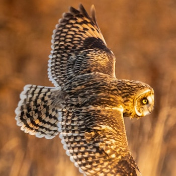
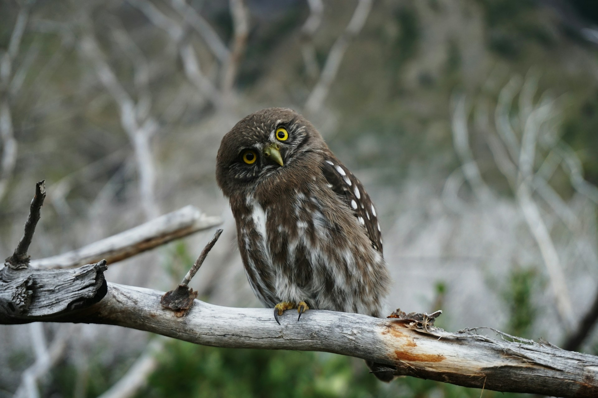
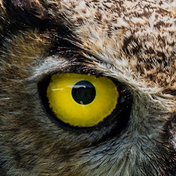
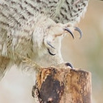
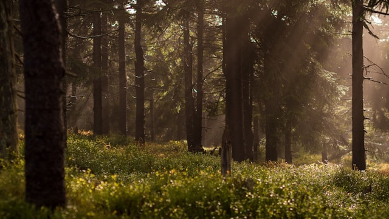

Silent wings help owls fly without alerting their prey.
Owls are mysterious night hunters with incredible vision, silent flight, and a vital role in natural ecosystems.


Silent wings help owls fly without alerting their prey.

Large eyes give owls excellent vision in low light.

Sharp talons make owls precise and powerful hunters.

Owls live in forests, deserts, mountains, and cities.
The owl sees in the dark what others miss in the light.
Join OwlWatch and learn more about these incredible birds.